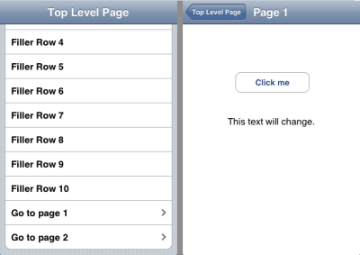

Please note: this article is part of the older "Objective-C era" on Cocoa with Love. I don't keep these articles up-to-date; please be wary of broken code or potentially out-of-date information. Read "A new era for Cocoa with Love" for more.
Automated user interface testing on the iPhone
Automated testing of application user interfaces can be tricky since user interfaces are designed for use by humans not automated tools. The iPhone is particularly challenging since existing tools that aid user interface testing on the Mac are not available. This post will show you a way to run automated, scripted tests on an iPhone app's user interface.
Update 2009-08-15: Updated to work with iPhone SDK 3.0.
A warning before we begin...
This post makes use of code from my earlier post Synthesizing a touch event on the iPhone. For this reason, I will restate the warning from that post.
Synthesizing a touch is for debugging and testing only. Do not submit this code in an application to the App Store. Doing so will likely result in:
- A bad UI experience for your users.
- An app that breaks on every OS update.
- Rejection of your application.
Automated user interface testing should always be done in a separate target and the testing code should be exclusive to that target and never submitted to Apple. I don't want to see your projects break or be rejected because you're trying to invoke use undisclosed APIs in your final application.
Challenges for user interface testing on the iPhone
Testing the user interface of an app on the iPhone presents three key challenges:
- How do you "read" the contents of the user interface?
- How do you manipulate the user interface?
- How do you programmatically invoke an iPhone application?
Scenario
I'm going to address the challenges listed above by demonstrating an automated test on the following program:
I want to test the following:
- Navigate to "Page 1" and ensure that the
UILabel reads "Button clicked on: Page 1" after the "Click me" button is pressed.To test this, I will create a special Target in the Xcode project that will embed a few extra classes that will run a script. It won't be a "scripting language", merely a data-driven set of commands that the program will run to interrogate itself. This script will perform the work required to navigate the user interface and check that appropriate objects exist and values are set as required.
For the complete implementation, download the "SelfTesting" project (44kb).
Note: this test implementation presented in this Project is not a "unit test", rather it will be a command-line invocation that produces either an empty file (success) or a file containing an error message (failure). A unit test would need to wrap this invocation and interpret the result appropriately.
Interrogating the user interface
The key task that the script will perform is interrogation and manipulation of the user interface. To that end, it must have the ability to read the current state of the user interface and select an object contained within.
Getting the complete user interface state
Generating a description of the user interface is very simple, since all elements descend from UIView. All we have to do is create a category on UIView containing the following:
- (NSMutableDictionary *)fullDescription
{
NSDictionary *frame =
[NSDictionary dictionaryWithObjectsAndKeys:
[NSNumber numberWithFloat:self.frame.origin.x], @"x",
[NSNumber numberWithFloat:self.frame.origin.y], @"y",
[NSNumber numberWithFloat:self.frame.size.width], @"width",
[NSNumber numberWithFloat:self.frame.size.height], @"height",
nil];
NSMutableDictionary *description =
[NSMutableDictionary dictionaryWithObjectsAndKeys:
[NSNumber numberWithInteger:(NSInteger)self], @"address",
NSStringFromClass([self class]), @"className",
frame, @"frame",
[NSNumber numberWithInteger:[self tag]], @"tag",
[self valueForKeyPath:@"subviews.fullDescription"], @"subviews",
nil];
if ([self respondsToSelector:@selector(text)])
{
[description
setValue:[self performSelector:@selector(text)]
forKey:@"text"];
}
if ([self respondsToSelector:@selector(title)])
{
[description
setValue:[self performSelector:@selector(title)]
forKey:@"title"];
}
if ([self respondsToSelector:@selector(currentTitle)])
{
[description
setValue:[self performSelector:@selector(currentTitle)]
forKey:@"currentTitle"];
}
return description;
}This method can then be invoked on any UIView object to get a description of it and all its children. The description includes class name, position, address in memory and all subviews.
By invoking the following:
NSDictionary *currentUserInterfaceState =
[[[UIApplication sharedApplication] keyWindow] fullDescription];we get a description of the keyWindow (i.e. the current visible window).
Selecting objects within this user interface description
The next requirement is to select the objects that interest us. To do this, I chose to convert the NSDictionary representation of the user interface to XML and select elements using XPath queries.
Using the iPhone XPath query code that I presented in my earlier post titled "Using libxml2 for XML parsing and XPath queries in Cocoa", selecting a set of matching UIViews from the full collection of views on screen looks like this:
NSDictionary *keyWindowDescription =
[[[UIApplication sharedApplication] keyWindow] fullDescription];
NSData *resultData =
[NSPropertyListSerialization
dataFromPropertyList:keyWindowDescription
format:NSPropertyListXMLFormat_v1_0
errorDescription:nil];
NSArray *queryResults = PerformXMLXPathQuery(resultData, xpath);The XPath queries to select views in this way are a little cumbersome, due to the "sequential nodes" arrangement of key-value pairs in a Property List. A demonstration of how a query to choose the UIRoundedRectButton on screen with the currentTitle "Click Me" would be:
//dict[key[.='className' and following-sibling::string[1]/.='UIRoundedRectButton'] and key[.='currentTitle' and following-sibling::string[1]/.='Click me']]More stealing from myself: manipulating the user interface
The only form of user interface manipulation required for this case is touches. The code for this can be found in my earlier post: "Synthesizing a touch event on the iPhone".
Previously, the code from that post didn't always work. There were multiple problems with the original implementation due to the limitations of working with undocumented features of the iPhone SDK. These problems got worse with the iPhone SDK 2.2 that Apple released this week.
I've gone back and fixed the code from the "Synthesizing a touch event on the iPhone". It should work reliably in most situations now, including as the "user interface manipulation" part of this post's test scripting environment.
Running script commands
The "script" that the test will run is just an NSArray of NSDictionary objects contained in a Property List file.
The class that handles this script is ScriptRunner in the project.
When the project is compiled with SCRIPT_DRIVEN_TEST_MODE_ENABLED defined (i.e. when the "TestScriptRunner" target is selected) an object of this class is created in the -applicationDidFinishLaunching: method. Once every two seconds, the ScriptRunner selects the next command and invokes the appropriate action. This delay is inserted to allow user interface animations to occur.
Note: you may notice the "scrollToRow" command. This command is required because rows that are not visible in aUITableViewdo not have a correspondingUITableViewCellin the view hierarchy. We must scroll to a row before attempting to send a touch event to it.
Configuring the project and command-line execution
A testing Target
Since we don't want any of the test code in our program normally, the project file should contain a separate Target for testing. No other Target should include the test classes. The script itself (a Property List file named "TestScript.plist") is similarly excluded from non-testing Targets.
The testing Target should have the "Base SDK" in its settings set to "Simulator" (whichever OS version you want).
Further, the testing Target will define the preprocessor macro SCRIPT_DRIVEN_TEST_MODE_ENABLED which will be used to conditionally construct and start the ScriptRunner object. This must be set in the Target Settings (editing the Project Settings will affect all Targets).
Auto-run build step
The only remaining addition to the project is a build step that will run the project in the simulator when the Target is built.
I borrow this technique from the Google Toolbox for Mac on their iPhoneUnitTesting wiki page.
A "Run Script" build phase is added to the Target as the last step. The script I use is:
export DYLD_ROOT_PATH="$SDKROOT"
export DYLD_FRAMEWORK_PATH="$CONFIGURATION_BUILD_DIR"
export IPHONE_SIMULATOR_ROOT="$SDKROOT"
export CFFIXED_USER_HOME="$USER_LIBRARY_DIR/Application Support/iPhone Simulator/User"
"$TARGET_BUILD_DIR/$EXECUTABLE_PATH" -RegisterForSystemEvents 2> "$PROJECT_DIR/errorLogFromLastBuild.txt"This script sets the environment variables so that a simulator build of the project can be invoked directly (last line of the script). I also redirect stderr to the file errorLogFromLastBuild.txt in the base directory of the Project. If this file has non-zero contents, then the test script failed.
Invoking the build and test for the testing target named "TestScriptRunner" is then achieved by invoking the following shell command from the same directory as the Project:
xcodebuild -configuration "Release" -target "TestScriptRunner"If errorLogFromLastBuild.txt is empty after the script has finished, then the test succeeded.
Running the program in this manner will not show a user interface. This may seem weird, especially given that it's a user interface test. This "headless" invocation will still run correctly, despite the lack of the Simulator window.
Podcast update
If you'd like to hear more about this topic, you can listen to the January 19, 2009 podcast interview I gave to Dan Grigsby of Mobile Orchard about the development of the project.
Conclusion
This final solution presented in the SelfTesting Project can be scripted to perform navigation of a user interface as well as queries and testing of the views within that user interface.
The current implementation is only intended for running one test per invocation. This approach is recommended because it resets the user interface state between tests. It does mean that running different tests involves swapping in a new TestScript.plist file each time.
Testing of more sophisticated classes with more complex state would require further command names added to the script's language and greater amounts of data extracted by -[UIView fullDescription]. It should be easy to add such features as required.
Finally, remember to keep your user interface testing code in a separate target (with testing files excluded from your main application target) so it isn't included in the application you submit to the App Store.
Singletons, AppDelegates and top-level data.
Method invocation formatting styles in Objective-C